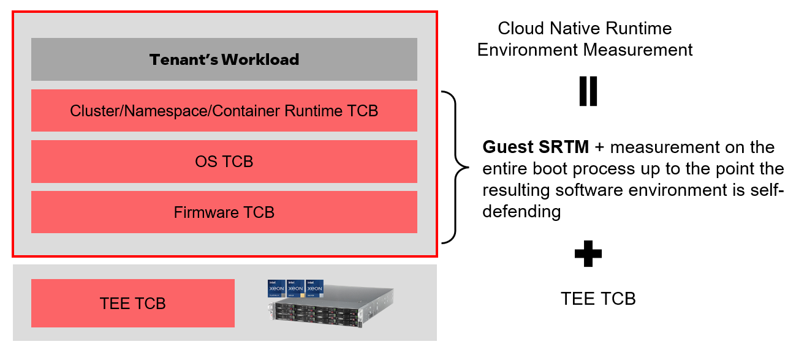
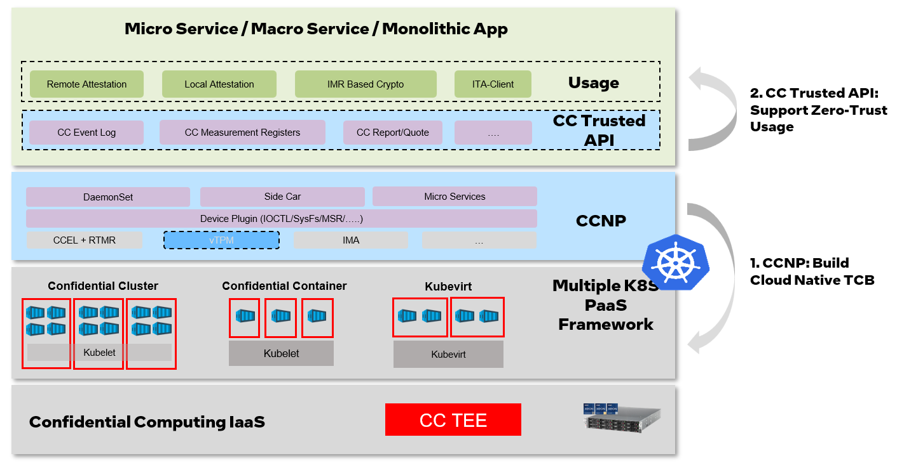
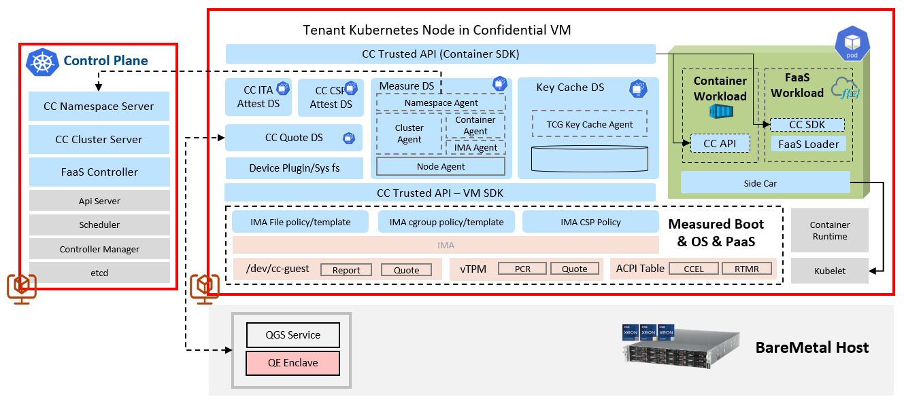
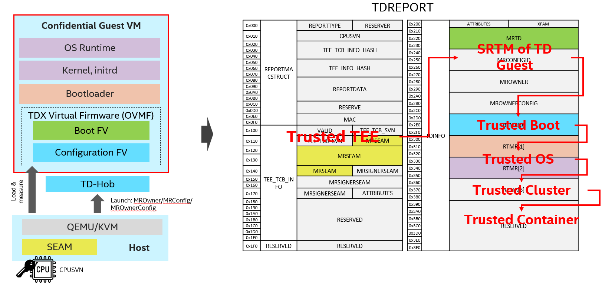
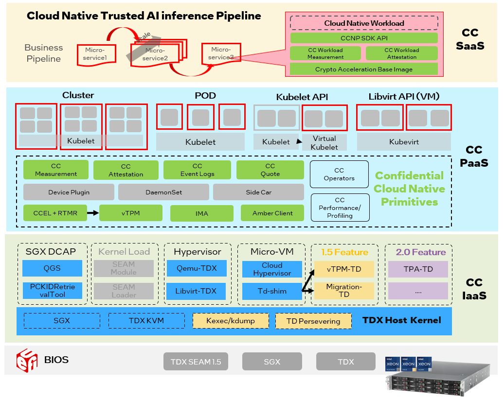

Welcome to Confidential Cloud Native Primitives’s documentation!¶
1. Introduction¶
Confidential Computing technology like Intel TDX provides isolated encryption runtime environment to protect data-in-use based on hardware Trusted Execution Environment (TEE). It requires a full chain integrity measurement on the launch-time or runtime environment to guarantee “consistently behavior in expected way” (defined by Trusted Computing of confidential computing environment for tenant’s zero-trust use case.
This project is designed to provide cloud native measurement for the full measurement chain from TEE TCB -> Firmware TCB -> Guest OS TCB -> Cloud Native TCB as follows:

_NOTE: Different with traditional trusted computing on non-confidential environment, the measurement chain is not only started with Guest’s SRTM (Static Root Of Measurement) but also need include the TEE TCB, because the CC VM environment is created by TEE via DRTM (Dynamic Root of Measurement) like Intel TXT on the host.
From the perspective of tenant’s workload, CCNP will expose the CC Trusted API <https://github.com/cc-api/cc-trusted-api> as the unified interfaces across diverse trusted foundations like RTMR+TDMR+CCEL and PCR+TPM2. The definitions and structures follows standard specifications like:
TCG PC Client Platform TPM Profile Specification,
TCG PC Client Platform Firmware Profile Specification

This project should also be able deployed on diverse cloud native PaaS frameworks like confidential cluster, container, kubevirt etc.
An example of landing architecture on confidential cluster is as follows, please refer detail deployment steps

Finally, the full trusted chain will be measured into CC report as follows using TDX as example:

_NOTE:_
The measurement of TEE, Guest’s boot, OS is per CC VM, but cluster/container measurement might be per cluster/namespace/container for cloud native architecture.
Please refer structure TDREPORT
2. Design¶
CCNP includes several micro-services as BaaS(Backend as a Service) to provides cloud native measurement, then exposes CC trusted API via cloud native SDK:
Services are designed to hide the complexity of different TEE platforms and provides common interfaces and scalability for cloud-native environment to address the fetching the fetching of quote, measurement and event log.
SDK is provided to simplify the use of the service interface for development, it covers communication to the service and parses the results from the services. With such SDK, users can perform related actions with one simple API call.
A
CCNPdevice plugin is provided as the dependency for services such as Quote Server and Measurement Server. It will help with device mount and folder injection within the service.
NOTE: For Intel TDX, it bases on Linux TDX Software Stack at tdx-tools, the corresponding white paper is at Whitepaper: Linux* Stacks for Intel® Trust Domain Extension 1.0.
